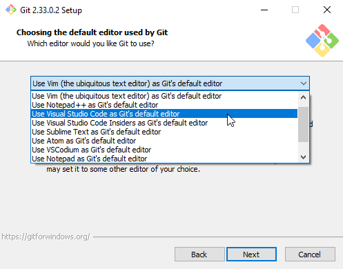
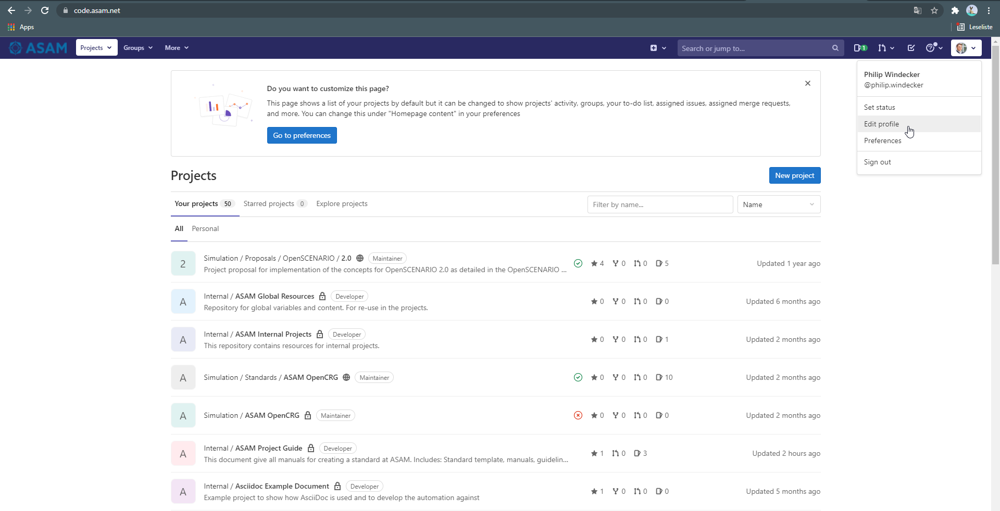
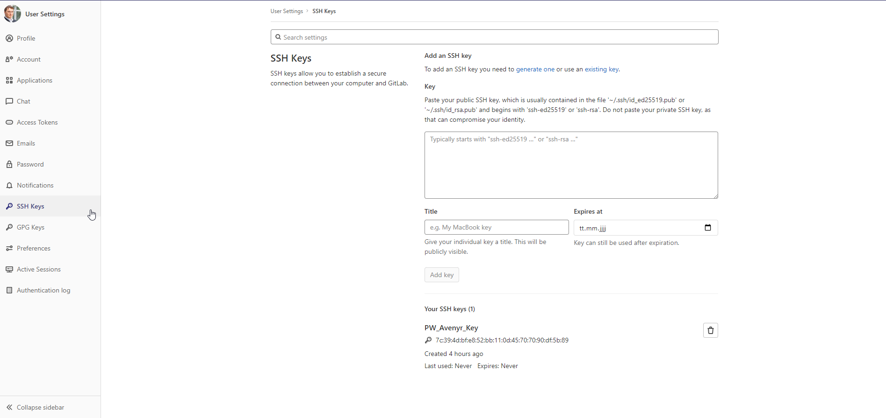
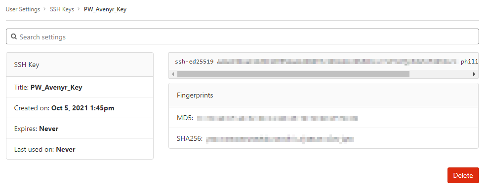
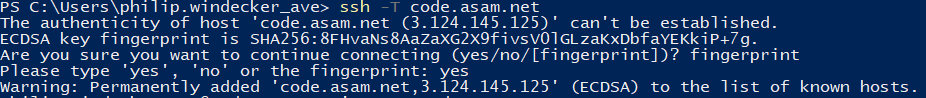

Setting up git

Prerequisites
-
For direct integration: VSCode is installed
How
Git requires a multi-step installation. The following sections describe each part of this setup sequentially.
Install git on your computer
-
Follow the installation instructions on screen. The installation routine requires many settings. You can leave most to all on their default value.
OPTIONAL: If you would like to use VSCode as your standard Git editor, follow the optional instructions below.
-
Select "Use Visual Studio Code as Git’s default editor" from the drop-down menu.

-
Configure user credentials
After installation of Git, configure your user credentials that Git uses when checking in changed content from your PC to the ASAM GitLab. To make sure your commits match your name and email details, a one time configuration is necessary.
-
Open a PowerShell window
-
Execute the following command and replace the entries "FIRST_NAME, LAST_NAME" accordingly:
git config --global user.name "FIRST_NAME LAST_NAME"Example 1. Setting your git user namegit config --global user.name Philip Windecker -
Next, execute the following command and replace the entry "MY_NAME@example.com" with your comany’s email:
git config --global user.email "MY_NAME@example.com"Example 2. Setting your emailgit config --global user.email philip.windecker@avenyr.deIf no error is returned, the configuration step has been successful.
OPTIONAL: SSH Key Pair
To ensure you don’t have to enter your login details every time you want to interact with the repository, add an SSH key to your account.
-
In a PowerShell window, enter the following:
The PowerShell window should be opened in your user folder (Windows). Usually, if you open it through right-click on the Windows button, this should be the case. ssh-keygen -t ed25519 -C "YourEmail@address.com"Example 3. Generating the ssh key pairssh-keygen -t ed25519 -C "philip.windecker@avenyr.de" -
Confirm the suggested path with Enter.
-
Type in a passphrase and confirm with Enter, or just confirm without a passphrase.
Entering a passphrase is optional and leads to additional steps every time you connect to the remote, so it is not recommended. -
Copy the created public key to the Windows clipboard:
Get-Content ~/.ssh/id_ed25519.pub | Set-Clipboard -
Edit your profile in GitLab

-
Open the settings "SSH Keys" on the left

-
Add the generated key to the SSH window in GitLab - Paste the key copied in step 2, give it a title and then click "Add Key"
Confirmation screen after SSH key has been entered in GitLab
-
In your PowerShell window, type the following command, hit Enter, and check the status:
Get-Service ssh-agent-
If the status is "Stopped", type the following, hit Enter, and check the StartType.
Get-Service ssh-agent | Select StartType -
If it is "Disabled": Activate the SSH Agent
This requires administration rights. If you do not have these, request support from your IT department. -
Open another PowerShell window (with Administration rights)
-
Set the SSH Agent to start manually by typing the following command and hitting Enter:
Get-Service -Name ssh-agent | Set-Service -StartupType Manual -
Close the PowerShell window with administration rights
-
-
-
Return to the other PowerShell window
-
Enter the following command and hit Enter
Start-Service ssh-agent -
To add your generated private key to the SSH Agent, enter
ssh-add $HOME/.ssh/id_ed25519If you chose a different folder or filename, you may need to change the path ("~/.ssh/") and/or the filename ("id_ed25519") accordingly. If the ~ is not recognised, replace "~" with "$HOME". -
Establish a connection to the GitLab by entering the following line and confirming with Enter:
ssh -T code.asam.net -
If this is the first connection through ssh, you will see a prompt stating that the authenticity of host 'code.asam.net' can’t be established.
 -
Enter 'yes' and confirm with enter
-
You will be prompted to enter your password, but this step is not required. Cancel the connection by typing
ctrl+c.
Troubleshooting / Known Issues
I cannot click "Next" after selecting Visual Studio Code as Git’s default editor
If you cannot click "Next", make sure Visual Studio Code is already installed. Return to the previous step and continue again. Now, the "next" button should be active.
I cannot copy the key using the provided command
Open the file you created in a text editor and copy the whole text manually.
I cannot add my private key to the sSH agent
This cannot be done in the Administration PowerShell window if your Admin account is not your user account! Otherwise, Windows will complain about unprotected private key files! Switch to a non-administrator PowerShell and execute the command again.